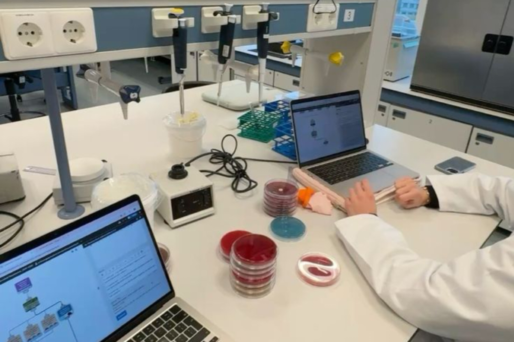
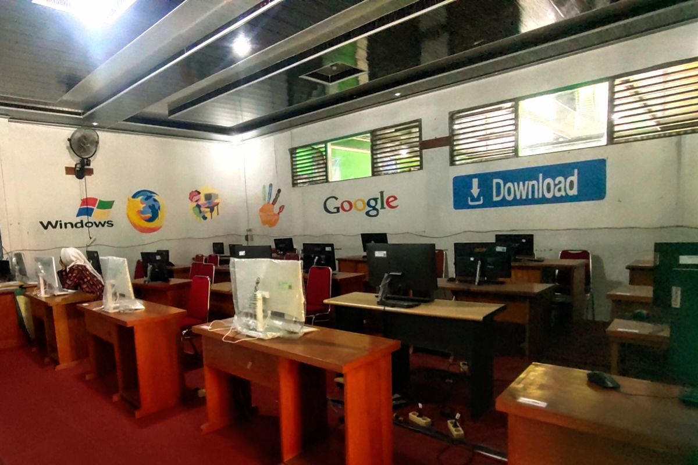
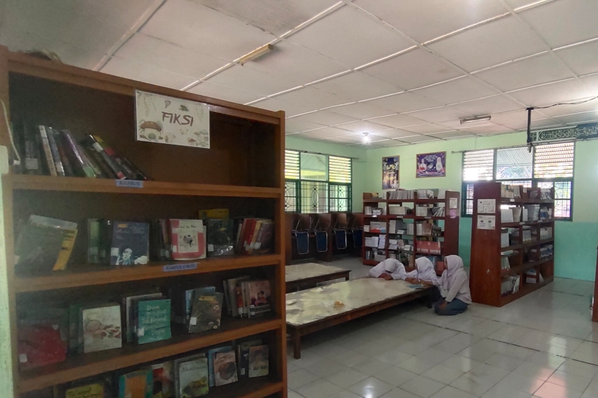
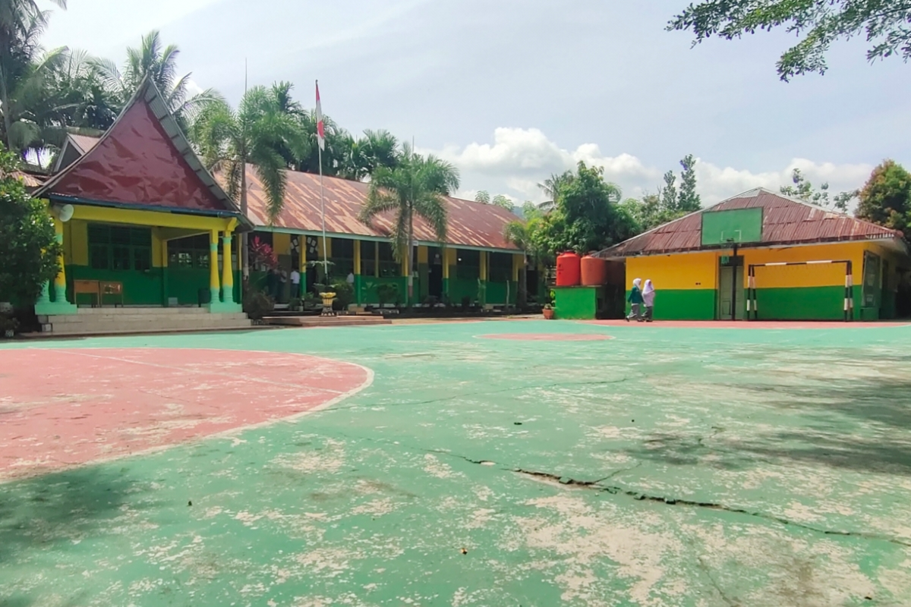
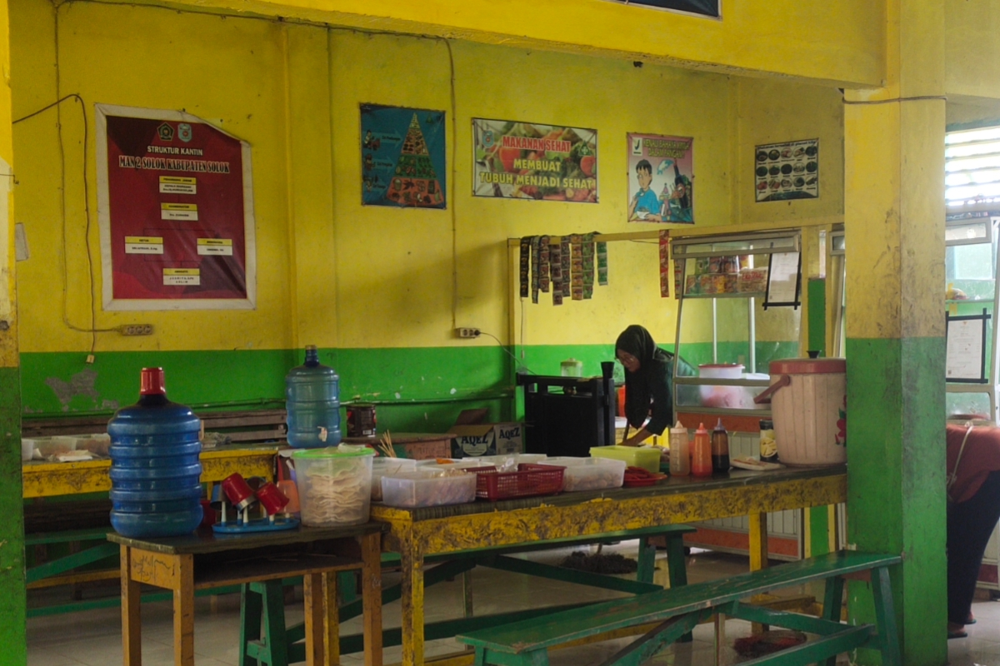
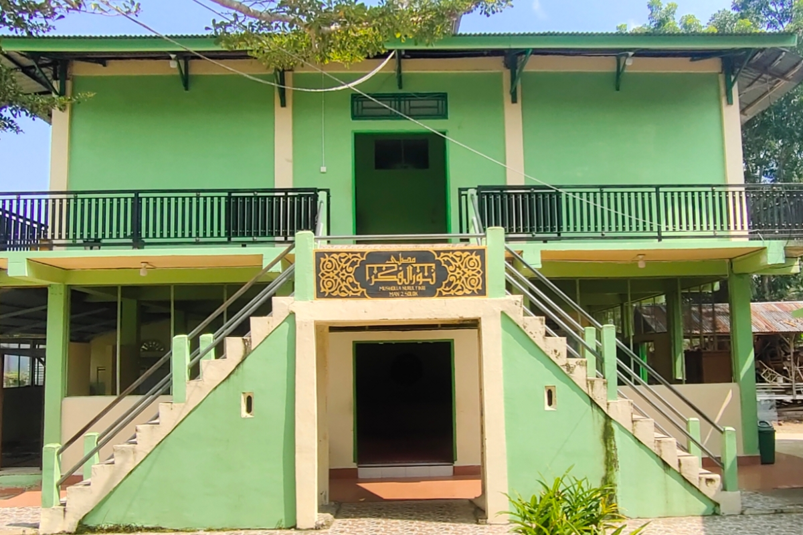
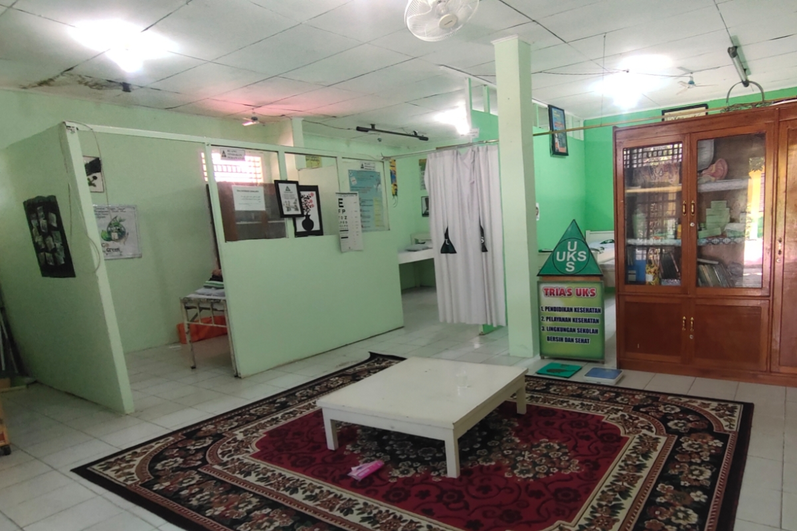

Lab IPA
Fasilitas untuk mendukung kegiatan pembelajaran dan praktik ilmu pengetahuan alam.
Welcome to MAN 2 Solok
Project by Haikal Ashidiq
Kenali fasilitas yang mendukung kegiatan belajar dan aktivitas di MAN 2 Solok.

Fasilitas untuk mendukung kegiatan pembelajaran dan praktik ilmu pengetahuan alam.

Fasilitas untuk mendukung kegiatan pembelajaran yang berkaitan dengan komputer dan teknologi.

Ruang yang mendukung kegiatan membaca, belajar, dan mencari sumber informasi.

Area yang dapat digunakan untuk kegiatan olahraga dan aktivitas siswa.

Fasilitas yang mendukung kebutuhan siswa dan warga madrasah selama berada di lingkungan sekolah.

Tempat ibadah dan kegiatan keagamaan bagi warga madrasah.

Fasilitas yang mendukung kebutuhan kesehatan dasar bagi warga madrasah.